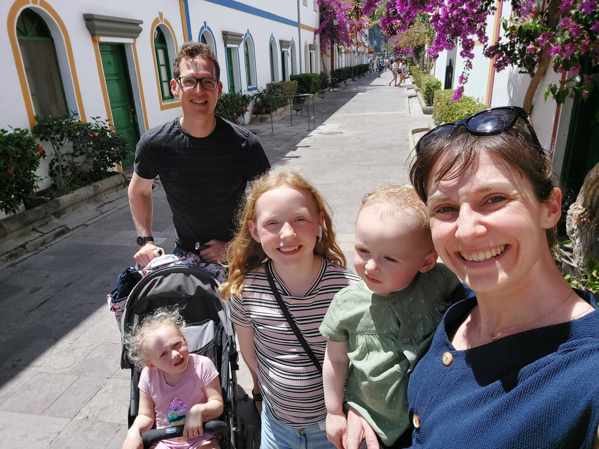

Introduktion
Programmering B
Vibenshus Gymnasium
2022 - 2024
Lidt om mig
Matematik
For funktionen af to variable
\[f(x,y) = 2 x^3 y^2+y^3\,,\]
er de første- og anden-afledte følgende:
\[\frac{\partial f}{\partial x} = 6 x^2 \quad , \quad \frac{\partial f}{\partial y} = 4 x^3 y + 3 y^2\]
og
\[\frac{\partial^2f }{\partial x^2} = 12 xy^2 \quad , \quad \frac{\partial^2 f}{\partial y^2} = 4 x^3 + 6 y \quad , \quad \frac{\partial^2 f}{\partial x \partial y} = 12 x^2y \quad , \quad \frac{\partial^2 f}{\partial y \partial x} = 12 x^2 y\,.\]
Fysik


Astronomi

Open source evangelist
- Jeg kan ikke fikse jeres windowsproblemer. (Jeg har ikke brugt windows i 18 år)
- Men jeg kan hurtigt installere en GNU/Linux-distribution på jeres computere!
- Benytter selv openSUSE Tumbleweed

- Forsøger at klare alt med
GNU Emacsogorg mode. - Anvender dog
vimkeybindings vha EVIL.

Bor på Amager
- Genbo til ITU (IT Universitet)
- Lejligheden er ofte i TV-Avisen.

Med kone og tre børn

Lidt om Pro B
De formelle sider :/
Faglige mål
Eleverne skal kunne:
- bruge programmering til at undersøge et emne eller problemområde, med henblik på - via programmets funktion - at skabe ny indsigt eller til at løse et problem
- behandle problemstillinger i samspil med andre fag
- anvende avancerede konstruktioner i et programmeringssprog
- redegørefor arkitekturen af programmer på forskellige abstraktionsniveauer, herunder relationen mellem brug og funktion
- redegøre for simple specifiktationsmodeller og realisere disse i simple velstrukturerede programmer samt teste disse
- rette, tilpasse og udvide avancerede programmer
- demonstrere viden om fagets identitet og metoder
- arbejde inkrementelt og systematisk i programmeringsprocessen.
Kernestof
Kernestoffet er:
- programmeringssprog og elementer i programmers opbygning, herunder variabler, typer, udtryk, kontrolstrukturer, parametrisering/abstraktionsmekanismer, rekursion, polymorfi og algoritmemønstre
- arkitekturen for programmers interaktion med omgivelserne med henblik på hændelsesstyret interaktion og interaktion mellem systemer
- generiske programdele og biblioteksmoduler
- arbejdsgange og systematik i programmeringsprocessen, herunder test og fejlfinding
- abstrakte programmeringsbeskrivelser og dokumentation.
Omfang
- 3 lektioner i 2.g
- 5 lektioner i 3.g
Fordybelsestid
WIP (Work In Progress)
| 2.g efterår | 2.g forår | 3.g efterår | 3.g forår | Samlet | |
|---|---|---|---|---|---|
| FT MED ret | 2 | 3 | 3 | 8 | |
| FT UDEN ret | 3 | 5 | 3 | 11 | |
| terminsprøve/projekt | 8 | 8 | |||
| Samlet | 5 | 8 | 6 | 8 | 27 |
Logbog
Den enkelte elev dokumenterer løbende sin faglige udvikling i en logbog. Dokumentationen i logbogen kan have form af f.eks. it-systemer, programmer, noter, synopser, programbeskrivelser og flowcharts.
Eksamensprojekt
- 20 timers undervisningstid til sidst i faget.
- Grupper af 2 til 3 (i særlige tilfælde individuelt)
- Består af et produkt (kode etc) og en synopsis (rapport).
- Synopsen skal dokumentere udviklingen af det færdige produkt, maks 5 til 8 normalsider ekskl. kode, rutediagrammer, bilag mm.
- Skolen giver nogle projektoplæg, der kan vælge mellem.
- Eksamensgrupperne skal udarbejde en fælles projektbeskrivelse inden for et af projektoplæggene. Projektbeskrivelsen skal godkendes af skolen.
- Synopsen udarbejdes individuelt.
- Synopsis og produkt skal senest afleveres en uge før eksamensperioden begynder.
- Synopsis og produkt indgår i grundlaget for den afsluttende årskarakter.
- Synopsen rettes og kommenteres ikke inden en eventuelt prøve.
Eksamen
- Mundtlig eksamen: Fremlæggelse af eksamensprojekt og opgave med bilag tildelt ved lodtrækning.
- Synopser, fortegnelse over eksamensprojekter samt opgaver med bilag sendes til censor
- Problemstillinger drøftes med censor inden eksaminerne.
- Forberedelsestid: 60 min
- Eksamenstid: 30 min
- Først præsentation af eksamensprojekt med spørgsmål fra eksaminator og censor. Herefter samtale omkring den trukne opgave med bilag.
- Der gives en samlet karakter ud fra den mundtlige præstation, omfattende præsentation af eksamensprojektet og opgaven med bilag.
- Der skal afleveres 2 eksemplarer af synopserne. Den ene kan fremsendes til censor.
- Produkt og synopsis skal være til rådighed ved eksamen.
- Elever skal gerne selv medbringe udstyr til eksamen.
- Man må gerne anvende internettet i forberedelsen og til eksamen.
De sjove sider :)
Hvordan skal vi så lære at programmere?
Git
- Vi kommer til at arbejde meget med
git.- Logbøger
- Opgaver
- Afleveringer
- Præsentationer
- I skal bruge en
github-konto- som skal linkes til
github classroom
- som skal linkes til


Python

1: print("Hello world!")
Hello world!
Det fundamentale
- Vi skal lege det fundamentale ind vha bibliotektet
python arcade - Vi tager udgangspunkt i bogen Arcade Academy - Learn Python
Vi skal bl.a. arbejde med
- Variable og udtryk
- Funktioner
- Kontrolsekvenser - løkker og betingelser
- Lister
- Klasser, objekter og OOP
Udvikling af GUIs
- Vi vil anvende
PyQt6ellerPyside6 - Eventbaseret programmering vha
signals & slotsiQt
1: import sys 2: 3: from PyQt6.QtCore import QSize, Qt 4: from PyQt6.QtWidgets import QApplication, QMainWindow, QPushButton 5: 6: 7: # Subclass QMainWindow to customize your application's main window 8: class MainWindow(QMainWindow): 9: def __init__(self): 10: super().__init__() 11: 12: self.setWindowTitle("My App") 13: 14: button = QPushButton("Press Me!") 15: 16: self.setFixedSize(QSize(400, 300)) 17: 18: # Set the central widget of the Window. 19: self.setCentralWidget(button) 20: 21: 22: app = QApplication(sys.argv) 23: 24: window = MainWindow() 25: window.show() 26: 27: app.exec()

Databehandling
- Arbejde med csv-filer.
- Plot af data i
matplotlib - Symbolsk behandling af matematik vha.
sympy. Altså brug python på samme måde som wordmat og geogebra. - Vi kommer til at udvikle et matematikprogram, som kan noget af det samme som geogebra, og nogen gange også noget, som geogebra ikke kan.
import sys import PySide6.QtWidgets as QW import pythobra_view import pythobra_model import sympy as sp class PythobraController: def __init__(self): self.ui = pythobra_view.PythobraMainWindow() self.backend = pythobra_model.PythobraModel() self.buttons = self.ui.buttons_widget.buttons self.setup_signals_and_slots() def setup_signals_and_slots(self): self.ui.buttons_widget.button_add_point.clicked.connect(self.receive_point_data) self.ui.buttons_widget.button_add_function.clicked.connect( self.receive_function_data ) def receive_point_data(self): self.point_dialog = pythobra_view.AddPointDialog(parent=self.ui) self.point_dialog.open() self.point_dialog.accepted.connect(self._save_and_plot_point) def _save_and_plot_point(self): ( point_name, point_coordinates, color, show_name, ) = self.point_dialog.send_values() point = pythobra_model.Point2D(point_name, *point_coordinates) self.backend.save_point(point) self.ui.objects_list_widget.objects_list.addItem(str(point)) self.backend.plot_point( point, self.ui.graphics_widget.mpl_figure_canvas.ax, color=color, with_name=show_name, ) # for point in self.backend.mathematical_items["points"]: # print(point) def receive_function_data(self): self.function_dialog = pythobra_view.AddFunctionDialog(parent=self.ui) self.function_dialog.open() self.function_dialog.accepted.connect(self._save_and_plot_function) def _save_and_plot_function(self): ( function_name, expression, domain_min, domain_max, color, show_name, ) = self.function_dialog.send_values() function = pythobra_model.Function2D(function_name, expression) self.backend.save_function(function) self.ui.objects_list_widget.objects_list.addItem(str(function)) self.backend.plot_function( expression, "x", domain_min, domain_max, self.ui.graphics_widget.mpl_figure_canvas.ax, ) if __name__ == "__main__": program = QW.QApplication.instance() if program == None: program = QW.QApplication(sys.argv) pythobra_app = PythobraController() pythobra_app.ui.show() program.exec()
Algoritmer og generativ kunst
- Vi skal arbejde med:
- abstrakt dokumentation i form af beskrivelser og pseudokode,
- algoritmeropbygning,
- rekursion, altså funktioner, som kalder sig selv
import turtle def tree(branchLen, t): if branchLen > 10: t.forward(branchLen) t.right(40) tree(branchLen - 30, t) t.left(80) tree(branchLen - 30, t) t.right(40) t.backward(branchLen) def main(): myWin = turtle.Screen() myWin.bgcolor("black") t = turtle.Turtle() t.width(10) t.left(90) t.up() t.backward(100) t.down() t.color("silver") tree(150, t) myWin.exitonclick() main()
Styring af legorobotter
- Vi skal bygge (simple) legorobotter
- og styre dem vha
python. - Vi kommer formentligt til at anvende pybricks og Lego Mindstorms EV3


Eksamensprojekt
- Det sidste forløb er eksamensprojektet.
- Her får man som elev lov til at folde sig ud og arbejde med et projekt, man selv findes interessant.
- Man skal gerne anvende meget af det, man har lært gennem de to års undervisning.
Godt, skal vi så komme i gang?
Fagets hjemmeside
Som et lille eksperiment vil jeg forsøge at holde jer opdateret på en lille hjemmeside, som jeg leger lidt med. (Det er faktisk bare en org mode-fil, som er eksporteret til html og lagt på nettet vha github pages. Det er utroligt, hvad man kan klare fra emacs.)
Find den her: https://vibenshus-gymnasium-programmering.github.io/
Her vil I kunne finde lektionsbeskrivelser, links til præsenationer (inkl. denne) og opgaver, samt undervisningsbeskrivelser. Måske kommer der mere til senere.
Programmer, vi skal bruge

Git
Download og installation
- Besøg https://git-scm.com/downloads
- Download den version, der passer til jeres operativsystem.
- Følg vejledningen i installationsprogrammet.
- Vi kommer i første omgang til at anvende kommandolinjen, men man også installere grafiske brugerflader. Hvis I vælger dette, må I selv vælge, hvilken I vil anvende.
- Der kommer også til at være understøttelse af git i de IDE'er, I kan vælge mellem.

Python

Download og installation
- Besøg https://www.python.org/downloads/
- Download den version af python, som passer til jeres operativsystem.
- Bare vælg det højeste versionsnummer.
- Hvis man anvender et 32-bit operativsystem, så kan dette også vælges ved at lede lidt på siden.
- Når I installerer python vha installationsprogrammet, er det vigtigt, at I tilføjer python til jeres "PATH"

Editorer og IDE'er


eller måske (Hvis I er meget nørdede)
Pycharm
- Jetbrains udgiver en række af IDE'er til forskellige sprog. Til
pythonhedder deres IDEPyCharm. - Download PyCharm her: https://www.jetbrains.com/pycharm/download/
- Vælg Community.
- Følg installationsvejledningen.
Visual Studio Code
- Måske bruger I allerede vs code. Hvis I gør, så skal I ikke rigtig gøre andet. :)
- Ellers kan det hentes her: https://code.visualstudio.com/
- Følg installationsvejledningen.
- (En open source evangelist ville til enhver tid vælge vs codium i stedet for, eller editorer som vim eller som mig emacs. Men så nørdet behøver man ikke at være for at være med på holdet. :))